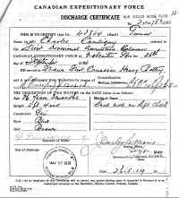

|

Certificat de démobilisation
|
LIVRE DU SOUVENIR
Les livres du souvenir commémorent le nom des milliers
de canadiens morts pour le Canada en temps de guerre. Ces livres sont exposés dans la chapelle du souvenir
au Parlement d'Ottawa. On en tourne
une page chaque jour. Le nom de Charles apparaît dans le livre couvrant
l'année 1941, page 27. Il est le premier en haut, dans la colonne de
gauche.
(Charles s'était réengagé pour la deuxième guerre et
est décédé à Kingston, mais cela c'est une autre guerre, donc une
autre histoire...)
PTE CONSIGNY,CHARLES VGC
Private (soldat) Consigny,Charles
Veterans Guard Canada

|
|
CARTES POSTALES Les cartes postales sont insérées dans l'album-photo
consacré aux Consigny (voir Francine). Elles ont aussi été
numérisées dans le site web consacré aux Consigny (lien ci-bas).
|
JOURNAUX DE GUERRE
Lien
vers les journaux de guerre, dont celui de la première unité de
Charles, le D.A.C., et de son unité principale, le 1st Canadian Heavy
Battery. Vous trouvez aussi les journaux des unités médicales où
Charles a été hospitalisé.
|